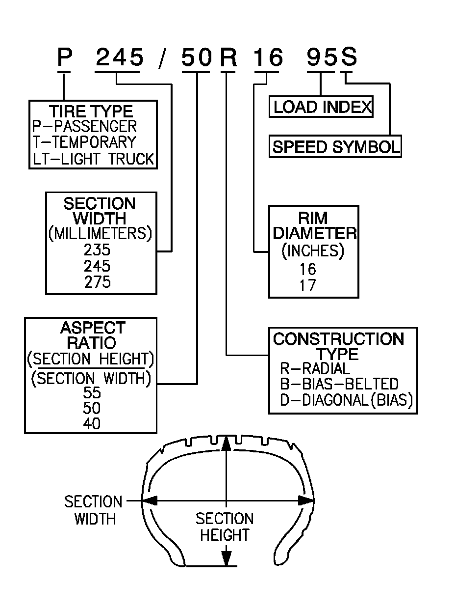

P-Metric Sized Tires Description
P-Metric Sized Tires Description
P-Metric Sized Tires Description:

Most P-metric tire sizes do not have exact corresponding alphanumeric tire sizes. Replacement tires should be of the same tire performance criteria (TPC) specification number including the same size, the same load range, and the same construction as those originally installed on the vehicle. Consult a tire dealer if you must replace the P-metric tire with other sizes. Tire companies can best recommend the closest match of alphanumeric to P-metric sizes within their own tire lines.